Code
y ~ x1 + x2 + x3R rms Package: The Linear ModelSome of the purposes of the rms package are to
R: y ~ x1 + x2 + x3y is modeled as \(\alpha + \beta_{1}x_{1} + \beta_{2}x_{2} + \beta_{3} x_{3}\)
y is the dependent variable/response/outcome, x’s are predictors (independent variables)trellis graphics function)rms (regression modeling strategies) package Harrell (2020) makes many aspects of regression modeling and graphical display of model results easier to dorms does a lot of bookkeeping to remember details about the design matrix for the model and to use these details in making automatic hypothesis tests, estimates, and plots. The design matrix is the matrix of independent variables after coding them numerically and adding nonlinear and product terms if needed.rms package fitting function for ordinary least squares regression (what is often called the linear model or multiple linear regression): olsf <- ols(y ~ age + sys.bp, data=mydata)age and sys.bp are the two predictors (independent variables) assumed to have linear and additive effects (do not interact or have synergism)mydata is an R data frame containing at least three columns for the model’s variablesf (the fit object) is an R list object, containing coefficients, variances, and many other quantitiesf throughout. In practice, use any legal R name, e.g. fit.full.modelf$coefficients
f$coef # abbreviation
coef(f) # use the coef extractor function
coef(f)[1] # get intercept
f$coef[2] # get 2nd coefficient (1st slope)
f$coef['age'] # get coefficient of age
coef(f)['age'] # dittoprint(f): print coefficients, standard errors, \(t\)-test, other statistics; can also just type f to printfitted(f): compute \(\hat{y}\)predict(f, newdata): get predicted values, for subjects described in data frame newdata1r)formula(f): print the regression formula fittedanova(f): print ANOVA table for all total and partial effectssummary(f): print estimates partial effects using meaningful changes in predictorsPredict(f): compute predicted values varying a few predictors at a time (convenient for plotting)ggplot(p): plot partial effects, with predictor ranging over the \(x\)-axis, where p is the result of Predictg <- Function(f): create an R function that evaluates the analytic form of the fitted functionnomogram(f): draw a nomogram of the model1 You can get confidence limits for predicted means or predicted individual responses using the conf.int and conf.type arguments to predict. predict(f) without the newdata argument yields the same result as fitted(f).
Note: Some of othe functions can output html if options(prType='html') is set, as is done in this chapter. When using that facility you do not need to add results='asis' in the knitr chunk header as the html is sensed automatically.
rms datadist FunctionTo use Predict, summary, or nomogram in the rms package, you need to let rms first compute summaries of the distributional characteristics of the predictors:
dd <- datadist(x1,x2,x3,...) # generic form
dd <- datadist(age, sys.bp, sex)
dd <- datadist(mydataframe) # for a whole data frame
options(datadist='dd') # let rms know where to findNote that the name dd can be any name you choose as long as you use the same name in quotes to options that you specify (unquoted) to the left of <- datadist(...). It is best to invoke datadist early in your program before fitting any models. That way the datadist information is stored in the fit object so the model is self-contained. That allows you to make plots in later sessions without worrying about datadist. datadist must be re-run if you add a new predictor or recode an old one. You can update it using for example
dd <- datadist(dd, cholesterol, height)
# Adds or replaces cholesterol, height summary stats in dd

2 maxfwt might be better analyzed as an ordinal variable but as will be seen by residual plots it is also reasonably considered to be continuous and to satisfy ordinary regression assumptions.
Consider the lead exposure dataset from B. Rosner Fundamentals of Biostatistics and originally from Landrigan PJ et al, Lancet 1:708-715, March 29, 1975. The study was of psychological and neurologic well-being of children who lived near a lead smelting plant. The primary outcome measures are the Wechsler full-scale IQ score (iqf) and the finger-wrist tapping score maxfwt. The dataset is available at hbiostat.org/data and can be automatically downloaded and load()’d into R using the Hmisc package getHdata function. For now we just analyze lead exposure levels in 1972 and 1973, age, and maxfwt2.
Commands listed in previous sections were not actually executed because their chunk headers contained eval=FALSE.
# For an Rmarkdown version of similar analyses see
# https://github.com/harrelfe/rscripts/raw/master/lead-ols.md
require(rms) # also loads the Hmisc package
getHdata(lead)
# Subset variables just so contents() and describe() output is short
# Override units of measurement to make them legal R expressions
lead <- upData(lead,
keep=c('ld72', 'ld73', 'age', 'maxfwt'),
labels=c(age='Age'),
units=c(age='years', ld72='mg/100*ml', ld73='mg/100*ml'))Input object size: 53928 bytes; 39 variables 124 observations
Kept variables ld72,ld73,age,maxfwt
New object size: 14096 bytes; 4 variables 124 observationscontents(lead)| Name | Labels | Units | Storage | NAs |
|---|---|---|---|---|
| age | Age | years | double | 0 |
| ld72 | Blood Lead Levels, 1972 | mg/100*ml | integer | 0 |
| ld73 | Blood Lead Levels, 1973 | mg/100*ml | integer | 0 |
| maxfwt | Maximum mean finger-wrist tapping score | integer | 25 |
# load jQuery javascript dependencies for interactive sparklines
sparkline::sparkline(0)print(describe(lead), 'continuous')lead Descriptives |
|||||||||||
| 4 Continous Variables of 4 Variables, 124 Observations | |||||||||||
| Variable | Label | Units | n | Missing | Distinct | Info | Mean | pMedian | Gini |Δ| | Quantiles .05 .10 .25 .50 .75 .90 .95 |
|
|---|---|---|---|---|---|---|---|---|---|---|---|
| age | Age | years | 124 | 0 | 73 | 1.000 | 8.935 | 8.875 | 4.074 | 3.929 4.333 6.167 8.375 12.021 14.000 15.000 | |
| ld72 | Blood Lead Levels, 1972 | mg/100*ml | 124 | 0 | 47 | 0.999 | 36.16 | 35 | 17.23 | 18.00 21.00 27.00 34.00 43.00 57.00 61.85 | |
| ld73 | Blood Lead Levels, 1973 | mg/100*ml | 124 | 0 | 37 | 0.998 | 31.71 | 31 | 11.06 | 18.15 21.00 24.00 30.50 37.00 47.00 50.85 | |
| maxfwt | Maximum mean finger-wrist tapping score | 99 | 25 | 40 | 0.998 | 51.96 | 52.5 | 13.8 | 33.2 38.0 46.0 52.0 59.0 65.0 72.2 | ||
dd <- datadist(lead); options(datadist='dd')
dd # show what datadist computed age ld72 ld73 maxfwt
Low:effect 6.166667 27.00 24.00 46.0
Adjust to 8.375000 34.00 30.50 52.0
High:effect 12.020833 43.00 37.00 59.0
Low:prediction 3.929167 18.00 18.15 33.2
High:prediction 15.000000 61.85 50.85 72.2
Low 3.750000 1.00 15.00 13.0
High 15.916667 99.00 58.00 84.0# Fit an ordinary linear regression model with 3 predictors assumed linear
f <- ols(maxfwt ~ age + ld72 + ld73, data=lead)f # same as print(f)Linear Regression Model
ols(formula = maxfwt ~ age + ld72 + ld73, data = lead)Frequencies of Missing Values Due to Each Variable
maxfwt age ld72 ld73
25 0 0 0
| Model Likelihood Ratio Test |
Discrimination Indexes |
|
|---|---|---|
| Obs99 | LR χ262.25 | R20.467 |
| σ9.5221 | d.f.3 | R2adj0.450 |
| d.f.95 | P(>χ2)0.0000 | g10.104 |
Residuals
Min 1Q Median 3Q Max -33.9958 -4.9214 0.7596 5.1106 33.2590
| β | S.E. | t | P(>|t|) | |
|---|---|---|---|---|
| Intercept | 34.1059 | 4.8438 | 7.04 | <0.0001 |
| age | 2.6078 | 0.3231 | 8.07 | <0.0001 |
| ld72 | -0.0246 | 0.0782 | -0.31 | 0.7538 |
| ld73 | -0.2390 | 0.1325 | -1.80 | 0.0744 |
coef(f) # retrieve coefficients Intercept age ld72 ld73
34.1058551 2.6078450 -0.0245978 -0.2389695 specs(f, long=TRUE) # show how parameters are assigned to predictors,ols(formula = maxfwt ~ age + ld72 + ld73, data = lead)
Units Label Assumption Parameters d.f.
age years Age asis 1
ld72 mg/100*ml Blood Lead Levels, 1972 asis 1
ld73 mg/100*ml Blood Lead Levels, 1973 asis 1
age ld72 ld73
Low:effect 6.166667 27.00 24.00
Adjust to 8.375000 34.00 30.50
High:effect 12.020833 43.00 37.00
Low:prediction 3.929167 18.00 18.15
High:prediction 15.000000 61.85 50.85
Low 3.750000 1.00 15.00
High 15.916667 99.00 58.00 # and predictor distribution summaries driving plotsg <- Function(f) # create an R function that represents the fitted model
# Note that the default values for g's arguments are medians
gfunction (age = 8.375, ld72 = 34, ld73 = 30.5)
{
34.105855 + 2.607845 * age - 0.024597799 * ld72 - 0.23896951 *
ld73
}
<environment: 0xc75ab55e8># Estimate mean maxfwt at age 10, .1 quantiles of ld72, ld73 and .9 quantile of ld73
# keeping ld72 at .1 quantile
g(age=10, ld72=21, ld73=c(21, 47)) # more exposure in 1973 decreased y by 6[1] 54.64939 48.43618# Get the same estimates another way but also get std. errors
predict(f, data.frame(age=10, ld72=21, ld73=c(21, 47)), se.fit=TRUE)$linear.predictors
1 2
54.64939 48.43618
$se.fit
1 2
1.391858 3.140361 Residuals may be summarized and plotted just like any raw data variable.
spar(mfrow=c(2,2)) # spar is in qreport; 2x2 matrix of plots
r <- resid(f)
plot(fitted(f), r); abline(h=0) # yhat vs. r
with(lead, plot(age, r)); abline(h=0)
with(lead, plot(ld73, r)); abline(h=0)
qqnorm(r) # linearity indicates normality
qqline(as.numeric(r))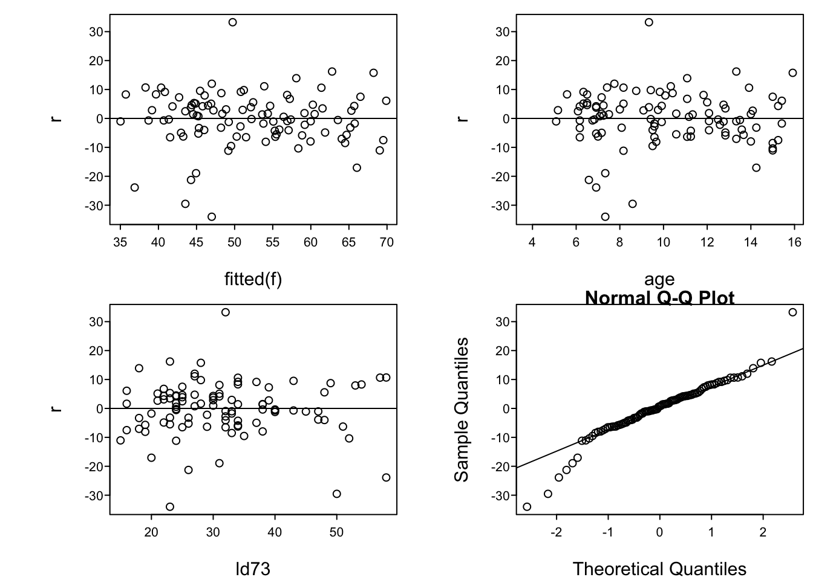
Predict and ggplot makes one plot for each predictorconf.int=FALSE to Predict() to suppress CLs)ggplot(Predict(f))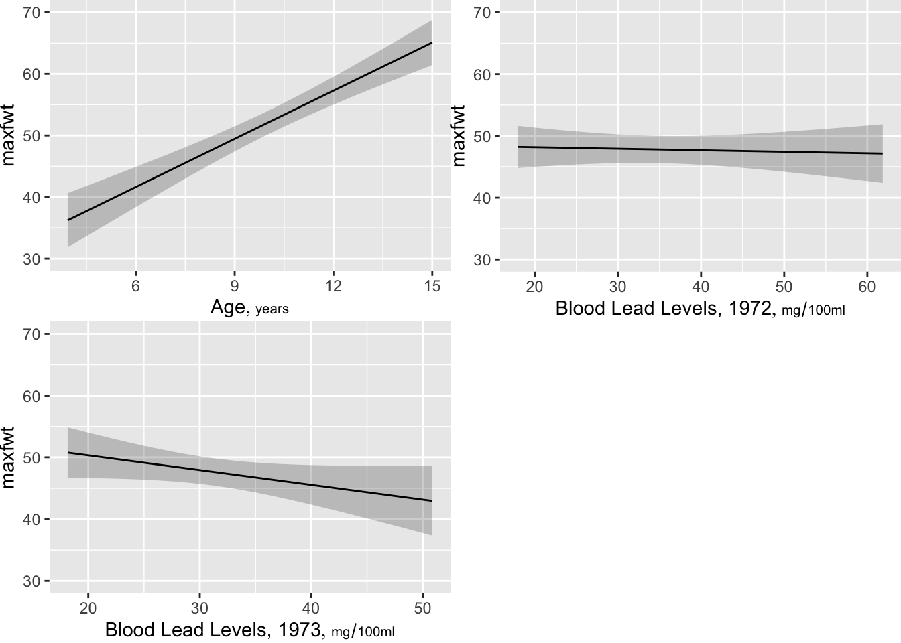
ggplot(Predict(f, age)) # plot age effect, using default range,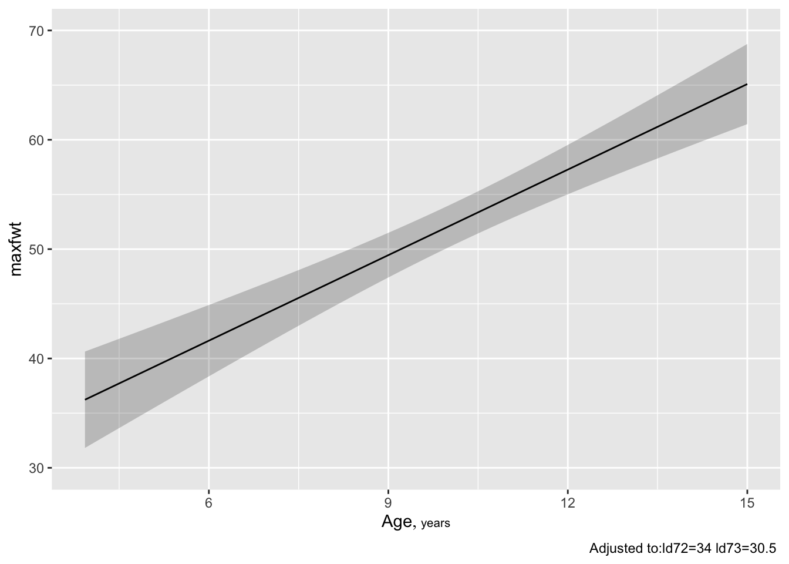
# 10th smallest to 10th largest ageggplot(Predict(f, age=3:15)) # plot age=3,4,...,15 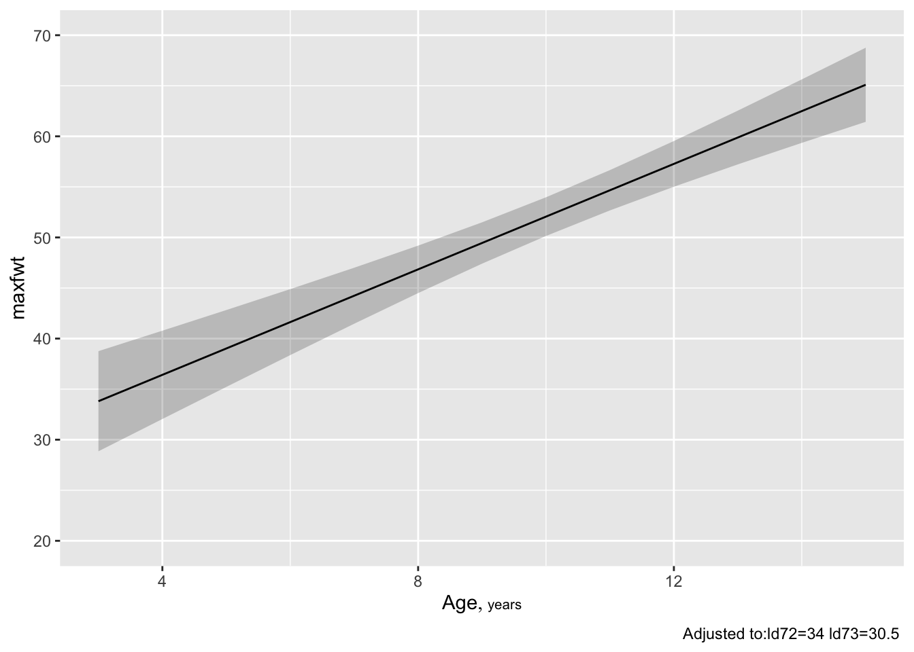
ggplot(Predict(f, age=seq(3,16,length=150))) # plot age=3-16, 150 points 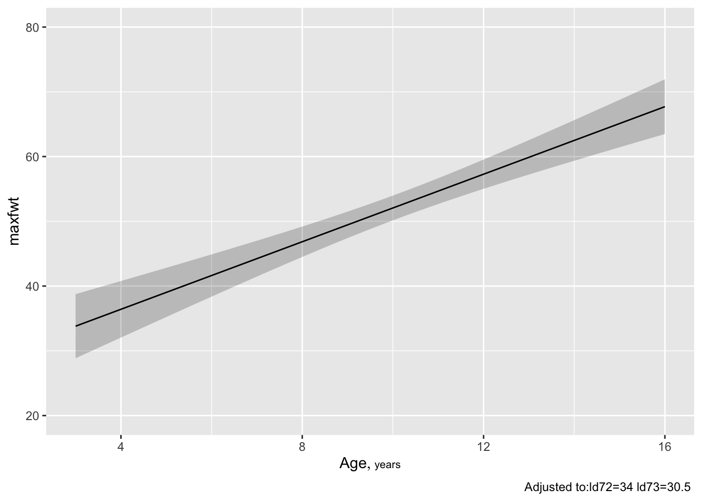
ggplot(Predict(f, age, conf.type='individual'))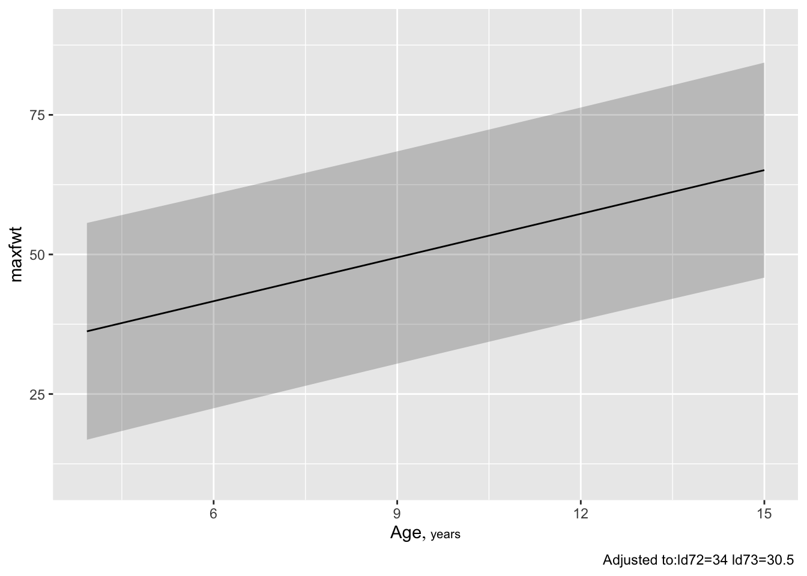
p1 <- Predict(f, age, conf.int=0.99, conf.type='individual')
p2 <- Predict(f, age, conf.int=0.99, conf.type='mean')
p <- rbind(Individual=p1, Mean=p2)
ggplot(p)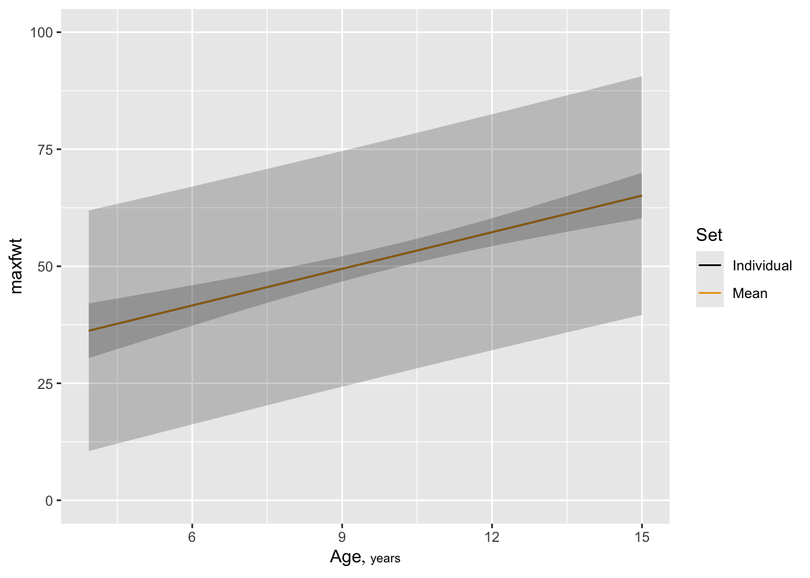
ggplot(Predict(f, ld73, age=3))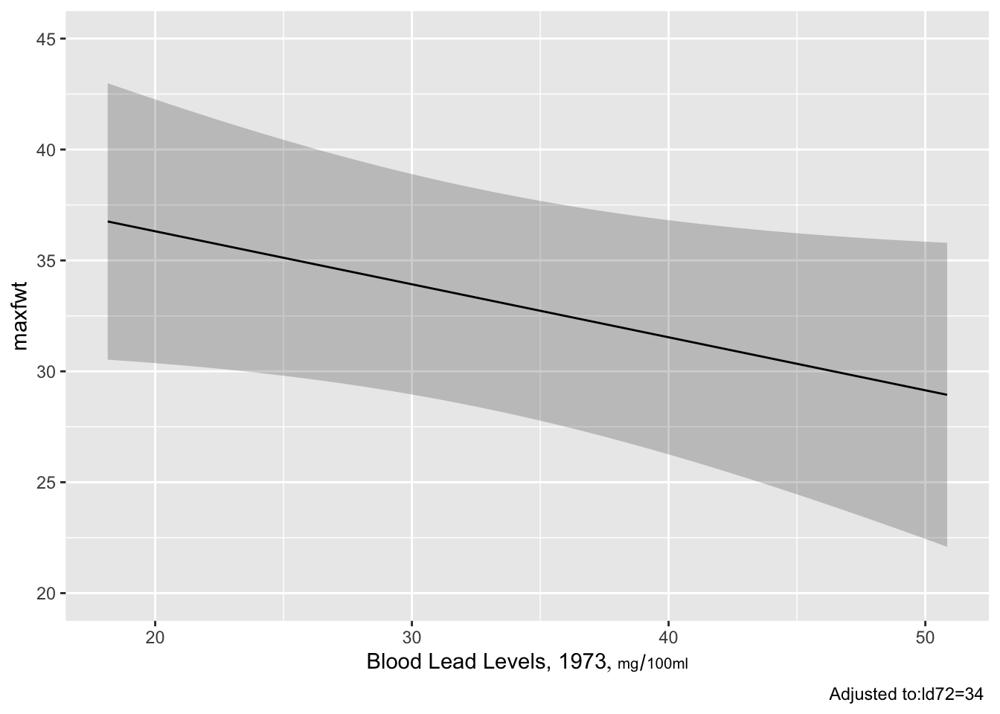
ggplot(Predict(f, ld73, age=c(3,9))) # add ,conf.int=FALSE to suppress conf. bands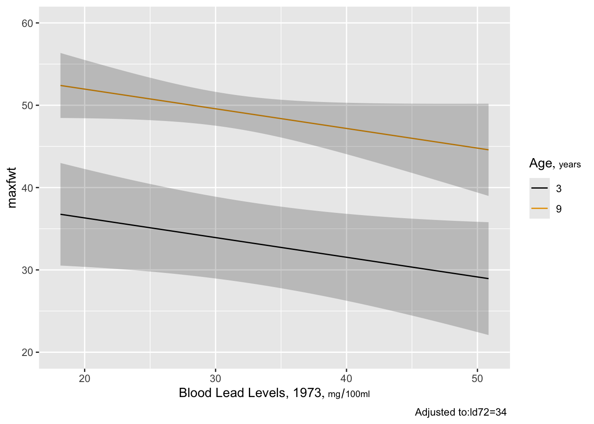
maxfwt bplot(Predict(f, ld72, ld73))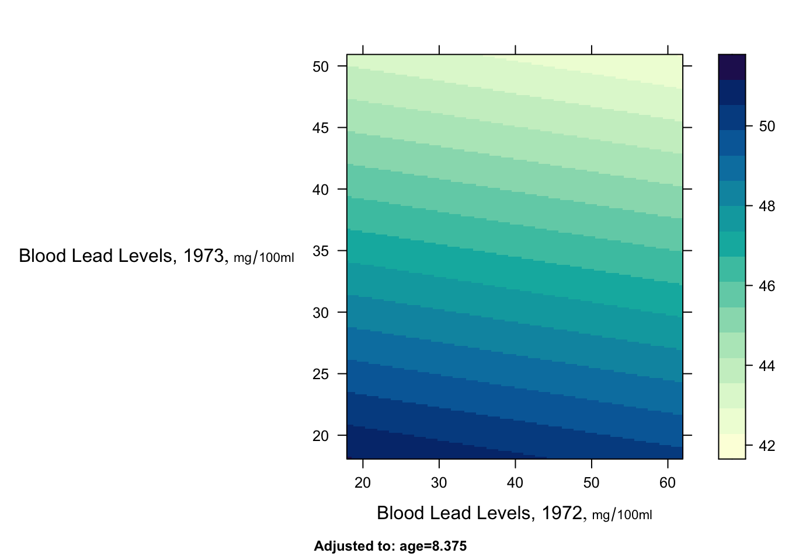
plot(nomogram(f))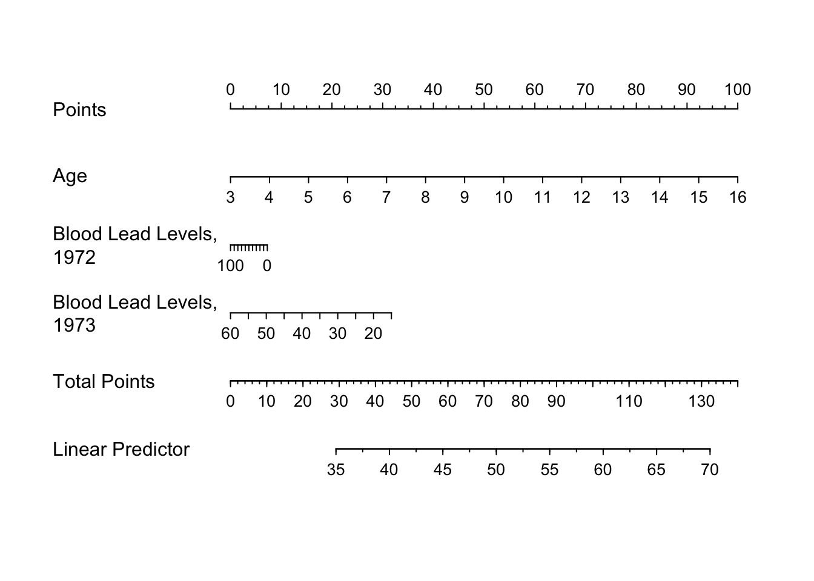
See this for excellent examples showing how to read such nomograms.
The summary function can compute point estimates and confidence intervals for effects of individual predictors, holding other predictors to selected constants. The constants you hold other predictors to will only matter when the other predictors interact with the predictor whose effects are being displayed.
How predictors are changed depend on the type of predictor:
Categorical predictors: differences against the reference (most frequent) cell by default
Continuous predictors: inter-quartile-range effects by default The estimated effects depend on the type of model:
ols: differences in means
logistic models: odds ratios and their logs
Cox models: hazard ratios and their logs
quantile regression: differences in quantiles
summary(f) # inter-quartile-range effects | Low | High | Δ | Effect | S.E. | Lower 0.95 | Upper 0.95 | |
|---|---|---|---|---|---|---|---|
| age | 6.167 | 12.02 | 5.854 | 15.2700 | 1.891 | 11.510 | 19.0200 |
| ld72 | 27.000 | 43.00 | 16.000 | -0.3936 | 1.251 | -2.877 | 2.0900 |
| ld73 | 24.000 | 37.00 | 13.000 | -3.1070 | 1.722 | -6.526 | 0.3123 |
summary(f, age=5) # adjust age to 5 when examining ld72,ld73| Low | High | Δ | Effect | S.E. | Lower 0.95 | Upper 0.95 | |
|---|---|---|---|---|---|---|---|
| age | 6.167 | 12.02 | 5.854 | 15.2700 | 1.891 | 11.510 | 19.0200 |
| ld72 | 27.000 | 43.00 | 16.000 | -0.3936 | 1.251 | -2.877 | 2.0900 |
| ld73 | 24.000 | 37.00 | 13.000 | -3.1070 | 1.722 | -6.526 | 0.3123 |
# (no effect since no interactions in model)
summary(f, ld73=c(20, 40)) # effect of changing ld73 from 20 to 40| Low | High | Δ | Effect | S.E. | Lower 0.95 | Upper 0.95 | |
|---|---|---|---|---|---|---|---|
| age | 6.167 | 12.02 | 5.854 | 15.2700 | 1.891 | 11.510 | 19.0200 |
| ld72 | 27.000 | 43.00 | 16.000 | -0.3936 | 1.251 | -2.877 | 2.0900 |
| ld73 | 20.000 | 40.00 | 20.000 | -4.7790 | 2.649 | -10.040 | 0.4805 |
When a predictor has a linear effect, its slope is the one-unit change in \(Y\) when the predictor increases by one unit. So the following trick can be used to get a confidence interval for a slope: use summary to get the confidence interval for the one-unit change:
summary(f, age=5:6) # starting age irrelevant since age is linear | Low | High | Δ | Effect | S.E. | Lower 0.95 | Upper 0.95 | |
|---|---|---|---|---|---|---|---|
| age | 5 | 6 | 1 | 2.6080 | 0.3231 | 1.966 | 3.2490 |
| ld72 | 27 | 43 | 16 | -0.3936 | 1.2510 | -2.877 | 2.0900 |
| ld73 | 24 | 37 | 13 | -3.1070 | 1.7220 | -6.526 | 0.3123 |
There is a plot method for summary results. By default it shows 0.9, 0.95, and 0.99 confidence limits.
spar(top=2)
plot(summary(f))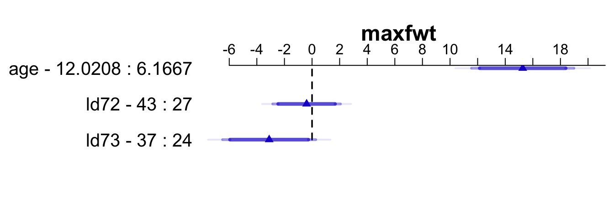
predict predict(f, data.frame(age=3, ld72=21, ld73=21)) 1
36.39448 # must specify all variables in the model
predict(f, data.frame(age=c(3, 10), ld72=21, ld73=c(21, 47))) 1 2
36.39448 48.43618 # predictions for (3,21,21) and (10,21,47)
newdat <- expand.grid(age=c(4, 8), ld72=c(21, 47), ld73=c(21, 47))
newdat age ld72 ld73
1 4 21 21
2 8 21 21
3 4 47 21
4 8 47 21
5 4 21 47
6 8 21 47
7 4 47 47
8 8 47 47predict(f, newdat) # 8 predictions 1 2 3 4 5 6 7 8
39.00232 49.43370 38.36278 48.79416 32.78911 43.22049 32.14957 42.58095 predict(f, newdat, conf.int=0.95) # also get CLs for mean $linear.predictors
1 2 3 4 5 6 7 8
39.00232 49.43370 38.36278 48.79416 32.78911 43.22049 32.14957 42.58095
$lower
1 2 3 4 5 6 7 8
33.97441 46.23595 32.15468 43.94736 25.68920 36.94167 27.17060 38.86475
$upper
1 2 3 4 5 6 7 8
44.03023 52.63145 44.57088 53.64095 39.88902 49.49932 37.12854 46.29716 predict(f, newdat, conf.int=0.95, conf.type='individual') # CLs for indiv.$linear.predictors
1 2 3 4 5 6 7 8
39.00232 49.43370 38.36278 48.79416 32.78911 43.22049 32.14957 42.58095
$lower
1 2 3 4 5 6 7 8
19.44127 30.26132 18.46566 29.27888 12.59596 23.30120 12.60105 23.31531
$upper
1 2 3 4 5 6 7 8
58.56337 68.60609 58.25989 68.30944 52.98227 63.13979 51.69810 61.84659 See also gendata.
# Model is b1 + b2*age + b3*ld72 + b4*ld73
b <- coef(f)
# For 3 year old with both lead exposures 21
b[1] + b[2]*3 + b[3]*21 + b[4]*21Intercept
36.39448 Function function g <- Function(f)
g(age=c(3, 8), ld72=21, ld73=21) # 2 predictions[1] 36.39448 49.43370g(age=3) # 3 year old at median ld72, ld73[1] 33.80449anova(fitobject) to get all total effects and individual partial effectsanova(f,age,sex) to get combined partial effects of age and sex, for exampleanova in an object in you want to print it various ways, or to plot it:an <- anova(f)
an # same as print(an)Analysis of Variance for maxfwt
| d.f. | Partial SS | MS | F | P | |
|---|---|---|---|---|---|
| age | 1 | 5907.535742 | 5907.535742 | 65.15 | <0.0001 |
| ld72 | 1 | 8.972994 | 8.972994 | 0.10 | 0.7538 |
| ld73 | 1 | 295.044370 | 295.044370 | 3.25 | 0.0744 |
| REGRESSION | 3 | 7540.087710 | 2513.362570 | 27.72 | <0.0001 |
| ERROR | 95 | 8613.750674 | 90.671060 |
anova(f, ld72, ld73) # combine effects into a 2 d.f. test Analysis of Variance for maxfwt
| d.f. | Partial SS | MS | F | P | |
|---|---|---|---|---|---|
| ld72 | 1 | 8.972994 | 8.972994 | 0.10 | 0.7538 |
| ld73 | 1 | 295.044370 | 295.044370 | 3.25 | 0.0744 |
| REGRESSION | 2 | 747.283558 | 373.641779 | 4.12 | 0.0192 |
| ERROR | 95 | 8613.750674 | 90.671060 |
Enhanced output to better explain which parameters are being tested is available:
print(an, 'names') # print names of variables being testedAnalysis of Variance for maxfwt
| d.f. | Partial SS | MS | F | P | Tested | |
|---|---|---|---|---|---|---|
| age | 1 | 5907.535742 | 5907.535742 | 65.15 | <0.0001 | age |
| ld72 | 1 | 8.972994 | 8.972994 | 0.10 | 0.7538 | ld72 |
| ld73 | 1 | 295.044370 | 295.044370 | 3.25 | 0.0744 | ld73 |
| REGRESSION | 3 | 7540.087710 | 2513.362570 | 27.72 | <0.0001 | age,ld72,ld73 |
| ERROR | 95 | 8613.750674 | 90.671060 |
print(an, 'subscripts')# print subscripts in coef(f) (ignoring Analysis of Variance for maxfwt
| d.f. | Partial SS | MS | F | P | Tested | |
|---|---|---|---|---|---|---|
| age | 1 | 5907.535742 | 5907.535742 | 65.15 | <0.0001 | 1 |
| ld72 | 1 | 8.972994 | 8.972994 | 0.10 | 0.7538 | 2 |
| ld73 | 1 | 295.044370 | 295.044370 | 3.25 | 0.0744 | 3 |
| REGRESSION | 3 | 7540.087710 | 2513.362570 | 27.72 | <0.0001 | 1-3 |
| ERROR | 95 | 8613.750674 | 90.671060 |
# the intercept) being tested
print(an, 'dots') # a dot in each position being testedAnalysis of Variance for maxfwt
| d.f. | Partial SS | MS | F | P | Tested | |
|---|---|---|---|---|---|---|
| age | 1 | 5907.535742 | 5907.535742 | 65.15 | <0.0001 | • |
| ld72 | 1 | 8.972994 | 8.972994 | 0.10 | 0.7538 | • |
| ld73 | 1 | 295.044370 | 295.044370 | 3.25 | 0.0744 | • |
| REGRESSION | 3 | 7540.087710 | 2513.362570 | 27.72 | <0.0001 | ••• |
| ERROR | 95 | 8613.750674 | 90.671060 |
Section 9.6
Section 9.7